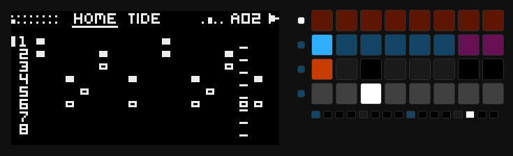
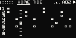
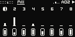
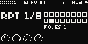
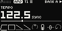
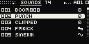
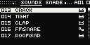

01
Every page one press away.
Top row: the soundSecond: the restBottom two: the keys

02
Two more than the FM-1. Track buttons 1–4; with Shift, 5–8.

03
Colours stack. Moves take turns.
PERFORM padThe keys, heldUp: six more

Hold a key
04
In time with the Move: one Play starts both.

Shift + knob 1 sets the tempo: tenths turned slowly, whole BPM fast.
05
96 sounds, a pad away: the jog plays each on the track.


06
The FM-1's nineteen, on eight tracks. Pick one and hit it.
07
0.1, not released yet. It runs on Schwung, unofficial: how it installs.